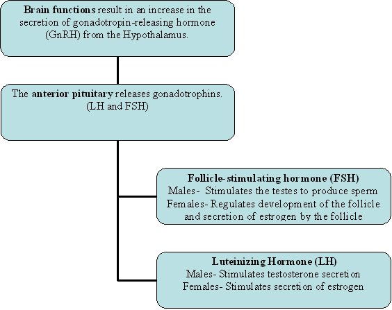
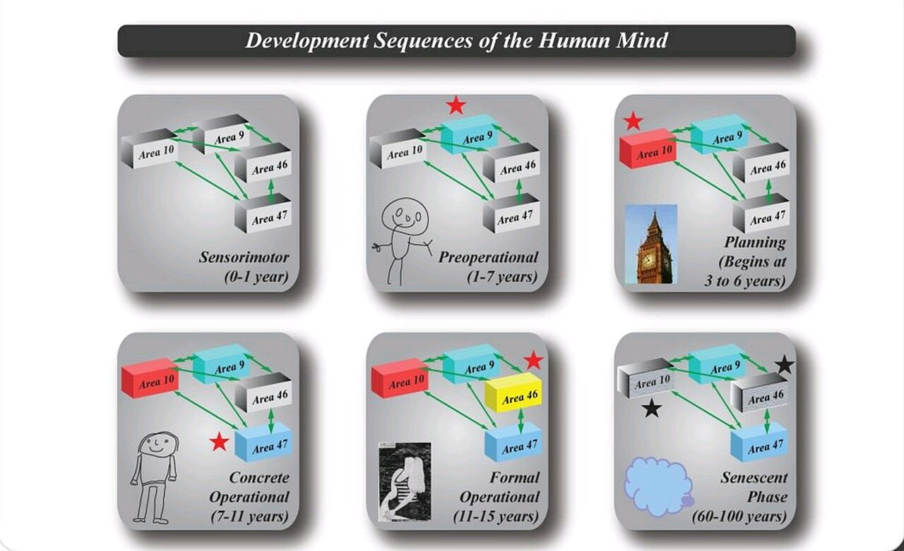

Adolescence: Body & Mind
Somewhere around the tenth or eleventh birthday, a quiet biological switch flips and childhood begins to end. Over the next several years the body remakes itself in a hormonal surge called puberty, the brain rewires from the inside out, and thinking cracks open into a new world of abstractions, possibilities, and ideals. Adolescence is the bridge between the child a person was and the adult they are becoming — a decade that is, at once, the healthiest and the most dangerous of the whole life span. This chapter follows that transformation on two tracks: the changing body and the changing mind, and the ways the two keep pulling on each other.
By the end of this chapter you can
- Define puberty and trace the HPG axis that sets it in motion.
- Distinguish primary from secondary sex characteristics and place the major events of puberty in girls and boys.
- Explain the effects of early and late maturation on adolescents' social and emotional lives.
- Describe how the adolescent brain develops and why the dual-systems imbalance makes risk-taking so common.
- Summarize the nutrition, sleep, and behavioral health risks that shape adolescent well-being.
- Explain Piaget's formal operational stage and hypothetico-deductive reasoning.
- Describe adolescent egocentrism, the imaginary audience, and the personal fable.
Section 1Puberty

The hormonal switch
Puberty is the biological process that turns a child's body into one capable of reproduction. It does not begin in the gonads — it begins in the brain. Years before any visible change, the hypothalamus starts releasing pulses of gonadotropin-releasing hormone (GnRH), which signal the pituitary gland to secrete two more hormones: luteinizing hormone (LH) and follicle-stimulating hormone (FSH). These travel to the gonads — ovaries or testes — and drive a surge in the sex hormones estrogen and testosterone. This chain from hypothalamus to pituitary to gonads is the HPG axis, and it is the engine of the entire transformation. An earlier, separate event called adrenarche (maturation of the adrenal glands, around ages 6–8) supplies the first androgens behind body odor and early hair; the main show, gonadarche, is the awakening of the gonads themselves.
Primary and secondary sex characteristics
The changes of puberty sort into two families. Primary sex characteristics involve the reproductive organs directly — the maturation of the ovaries and uterus, the testes and penis. Their signature milestones are menarche, a girl's first menstrual period, and spermarche, a boy's first ejaculation of sperm. Secondary sex characteristics are the outward signs that do not directly enable reproduction: breast development, the growth of pubic and underarm hair, the deepening of the male voice, facial hair, and the redistribution of body fat and muscle. Clinicians track this sequence with the Tanner stages, a five-point scale from prepubertal (Stage 1) to fully mature (Stage 5). Overlaying all of it is the adolescent growth spurt, the fastest rate of growth since infancy — hands and feet enlarge first, giving the temporary gangliness that so many teens dread.
| Type | What it involves | Signature events |
|---|---|---|
| Primary | Maturation of the reproductive organs themselves | Menarche (first period); spermarche (first sperm) |
| Secondary (girls) | Outward signs not tied to reproduction | Breast budding, pubic/underarm hair, widening hips, growth spurt |
| Secondary (boys) | Outward signs not tied to reproduction | Voice deepening, facial & body hair, broadening shoulders, growth spurt |
Timing: early and late maturers
Puberty is not a stopwatch. On average, girls enter it about two years ahead of boys — girls around 10–11, boys around 11–12 — but the normal range spans several years, and the age of onset has crept earlier over the past century, a shift called the secular trend and linked to better nutrition and higher body fat. What matters psychologically is less when puberty arrives than how a child's timing compares with that of their peers. The research is consistent and a little sobering. Early-maturing girls face the greatest risk: their adult-looking bodies draw older attention and social pressures they are not yet emotionally ready for, and they show higher rates of body dissatisfaction, anxiety, depression, and early substance use. Early-maturing boys are often admired — taller, more athletic, granted status — yet that same advantage can pull them toward older peers and riskier behavior. Late-maturing boys may feel self-conscious and overlooked, though many catch up socially and some become notably resourceful.
- Puberty is driven by the HPG axis: hypothalamus (GnRH) → pituitary (LH, FSH) → gonads (estrogen, testosterone).
- Primary sex characteristics involve the reproductive organs (menarche, spermarche); secondary ones are outward signs like breasts, hair, and voice change.
- Girls typically begin about two years before boys, and onset has grown earlier over generations (the secular trend).
- Timing effects depend on the peer comparison — early-maturing girls are the most vulnerable to emotional and social risk.
Section 2The adolescent brain

Two systems on different clocks
For a long time, adults explained adolescent risk-taking with a shrug: teenagers just don't think. Brain imaging has told a more precise and more forgiving story. The adolescent brain contains two systems that mature on very different schedules. The socioemotional system — deep limbic structures such as the amygdala and the nucleus accumbens that register emotion and reward — becomes highly active early, right around the hormonal flood of puberty. The cognitive-control system — the prefrontal cortex that weighs consequences, plans ahead, and applies the brakes — matures slowly, and is not fully wired until the mid-twenties. This dual-systems imbalance means that for several years an adolescent drives a car with a very sensitive accelerator and brakes that are still being installed. The teen is not irrational so much as differently calibrated: rewards feel enormous, and the machinery for restraint is still under construction.
Rewiring: pruning and myelination
Underneath, the brain is not just growing — it is being edited. In a process called synaptic pruning, connections that go unused are eliminated while frequently used ones are strengthened, a "use it or lose it" sculpting that makes the brain more efficient and more specialized. At the same time, myelination wraps neural pathways in a fatty sheath that speeds signals dramatically, and it proceeds back-to-front, reaching the prefrontal cortex last. Shifts in the neurotransmitter dopamine also heighten the pull of reward during these years. The upside of all this plasticity is real: adolescence is a second great window for learning, when a brain primed for novelty and exploration is exactly what a young person needs to leave the family nest and build a life of their own.
| System | Key regions | Matures | Drives |
|---|---|---|---|
| Socioemotional | Amygdala, nucleus accumbens (limbic) | Early — at puberty | Reward-seeking, emotion, sensitivity to peers |
| Cognitive control | Prefrontal cortex | Late — into the mid-20s | Planning, impulse control, weighing consequences |
Risk in context — the peer effect
The imbalance shows up most vividly when other teenagers are watching. In driving-simulation studies, adolescents took roughly twice as many risks when peers were in the room, while adults were unaffected — and brain scans showed the reward system lighting up in the presence of friends. This is not simple peer pressure in the old sense of being talked into things; the mere presence of peers tilts the whole calculation, making the thrill of a risky choice feel more valuable than its danger. It helps to separate cold cognition, careful reasoning in a calm moment, from hot cognition, decision-making in the heat of emotion and social arousal. On a written quiz, a teenager can list every hazard of speeding; behind the wheel with friends laughing, a different system is at the controls.
- The dual-systems model: the emotion-and-reward (limbic) system matures early, the impulse-control (prefrontal) system matures late, into the mid-20s.
- Synaptic pruning and myelination reshape the brain for efficiency, with the prefrontal cortex maturing last.
- Peers roughly double adolescent risk-taking by amplifying the reward system — the presence of friends changes the math.
- The plasticity behind the risk also makes adolescence a prime window for learning and growth.
Section 3Health and risk

Fueling a growing body
The growth spurt makes adolescence one of the hungriest periods of life, and its nutritional needs are specific. Bones are laying down the mineral that will have to last a lifetime, so calcium and vitamin D intake during these years largely determine peak bone mass. Iron needs rise for everyone building muscle and blood volume, and especially for girls once menstruation begins. Yet this is precisely when eating habits often deteriorate: skipped breakfasts, more meals away from home, more sugary drinks and fast food, and diets driven by autonomy and marketing rather than balance. Two opposite problems bloom in adolescence. On one side, obesity becomes more common and more stubborn, carrying forward into adult disease. On the other, the eating disorders — anorexia nervosa and bulimia nervosa — typically first appear in these years, fed by a potent mix of body-image pressure, dieting, and the perfectionism the culture rewards.
The sleep-deprived teen
Adolescents need about 8–10 hours of sleep, and most get far less. The reason is not simply late-night screens, though those matter: puberty shifts the biological clock. A circadian phase delay pushes the release of the sleep hormone melatonin later into the night, so a teenager who genuinely cannot fall asleep at nine is not being defiant — their brain is not yet issuing the signal. Collide that delayed clock with early school start times and the result is chronic sleep debt across a whole generation. The costs are heavy and easy to miss: impaired attention and memory (sleep is when the day's learning is consolidated), irritability and low mood, weakened immune function, and a sharply higher risk of drowsy-driving crashes. Sleep is not a luxury the busy teen can trade away; it is where much of the growing brain does its work.
| Domain | What goes wrong | Why it matters |
|---|---|---|
| Nutrition | Low calcium/iron, more fast food, dieting | Peak bone mass; anemia; obesity and eating disorders |
| Sleep | Circadian delay plus early schedules → sleep debt | Learning, mood, immunity, drowsy-driving risk |
| Behavior | Substance experimentation, risky driving | The leading, and largely preventable, causes of death |
The real risks
Here is the paradox at the center of adolescent health: it is the physically robust stretch of life — illness is rare, strength and stamina peak — and yet the death rate rises compared with childhood. The reason is that the leading threats are no longer disease but behavior. Across the world, the leading causes of adolescent death are preventable: unintentional injury, above all motor-vehicle crashes, along with the consequences of substance use and other risk-taking. Most teenagers who experiment with alcohol or other substances do not go on to serious harm, but early and heavy use is linked to worse outcomes, and the still-maturing brain is more vulnerable to addiction than the adult brain. The protective factors are unglamorous and powerful: connected families, engaged schools, a caring adult, and structures that keep the inevitable experimentation from turning fatal.
- The growth spurt raises needs for calcium (peak bone mass) and iron, just as eating habits often worsen.
- Obesity and the eating disorders both tend to emerge or intensify in adolescence.
- A puberty-driven circadian phase delay plus early schedules leaves most teens chronically short of the 8–10 hours they need.
- The leading causes of adolescent death are behavioral and preventable — injury, especially crashes, and substance use.
Section 4Formal operations

Piaget's fourth stage
In Jean Piaget's account of cognitive development, thinking climbs through four stages: the sensorimotor stage of infancy (roughly birth to 2), the preoperational stage of early childhood (about 2 to 7), the concrete operational stage of middle childhood (about 7 to 11), and finally the formal operational stage, beginning around age 11 and continuing to unfold through adolescence. The concrete-operational child reasons capably — but only about concrete, tangible things they can picture. The leap of formal operations is the ability to reason about the abstract and the hypothetical: about what could be, not merely what is. A younger child asked "What if snow were black?" balks because it isn't. An adolescent can accept the premise and run with it, reasoning logically inside an imagined world.
Hypothetico-deductive reasoning
The hallmark of the stage is hypothetico-deductive reasoning — the scientist's method. Given a problem, the formal-operational thinker generates the full set of possible explanations, then tests them systematically, changing one variable at a time. Piaget demonstrated this with the pendulum problem: figure out what determines how fast a pendulum swings (the length of the string, the weight, the height of the drop, the push). The concrete thinker fiddles unsystematically and draws muddled conclusions; the formal-operational thinker isolates each variable in turn and arrives at the answer that only string length matters. This same machinery — called propositional thought — lets adolescents follow "if…then" logic, reason about statements as statements, and handle the algebra, geometry, and argumentation that suddenly fill their schooling.
| Stage | Approximate age | Hallmark |
|---|---|---|
| Sensorimotor | Birth–2 | Knows the world through senses and action; object permanence |
| Preoperational | 2–7 | Symbols and language; egocentrism; lacks conservation |
| Concrete operational | 7–11 | Logic about concrete, tangible things; conservation, reversibility |
| Formal operational | 11 and up | Abstract and hypothetical reasoning; systematic problem-solving |
Not everyone, not always
Piaget's stage captures something real, but later research softened its edges. Formal operational thought is neither universal nor constant: it depends heavily on education and cultural experience, adults deploy it inconsistently and mostly in domains they know well, and even a gifted reasoner may fall back on concrete habits under stress. What is unmistakable is a new flavor of adolescent thought — a fascination with possibility. Able for the first time to imagine ideal worlds, teenagers measure the real one against them and find it wanting, which is why this period brims with idealism, passionate argument, and a keen, sometimes withering eye for adult hypocrisy. The very power that solves for x also fuels the debate at the dinner table.
- Piaget's stages: sensorimotor, preoperational, concrete operational, and formal operational (about age 11 and up).
- Formal operations is the capacity for abstract and hypothetical reasoning — thinking about what could be.
- Hypothetico-deductive reasoning tests possibilities systematically, one variable at a time (the pendulum problem).
- The stage is not universal or constant — it depends on education and culture — and it fuels adolescent idealism.
Section 5Adolescent thinking

A new self-focus
The new power to think about thinking has a curious side effect. The psychologist David Elkind described a distinctive adolescent egocentrism — not selfishness, but a difficulty separating one's own thoughts from other people's. Newly able to imagine what others are thinking, adolescents make a natural error: they assume everyone else is thinking about the same thing they are — namely, them. It is an over-application of a genuine cognitive gain. The child could not readily model other minds; the adolescent can, and promptly floods those imagined minds with their own preoccupations. Elkind gave this self-focus two vivid faces: the imaginary audience and the personal fable.
The imaginary audience
The imaginary audience is the sensation of being constantly watched and evaluated, as though one were always on stage. A single blemish becomes a catastrophe because everyone will surely notice; an outfit is agonized over because the whole cafeteria is judging it; a stumble in the hallway feels broadcast to the world. This is the engine of adolescent self-consciousness, and it explains behavior that baffles adults — the refusal to be seen with a parent, the two hours in front of the mirror, the paralysis at the thought of a class presentation. The audience is imaginary, but the stage fright is entirely real.
The personal fable
Its companion is the personal fable: a conviction that one's own experiences are utterly unique and that no one — certainly no parent — could possibly understand. "You don't know what this feels like" is its anthem. A closely linked belief, sometimes called the invincibility fable, whispers that ordinary risks apply to other people but not to me: I won't get in a crash, I won't get pregnant, I won't get hooked. Set beside the reward-hungry teenage brain of Section 2, the personal fable is more than a quirk of thought — it is one of the cognitive ingredients of adolescent risk-taking. Both the audience and the fable soften as perspective-taking matures and as real relationships teach the adolescent that others, too, feel unique, watched, and afraid.
| Belief | The feeling | Everyday sign |
|---|---|---|
| Imaginary audience | "Everyone is watching and judging me." | Extreme self-consciousness; agonizing over appearance |
| Personal fable | "My experience is unique; no one understands me." | "You don't get it"; a sense of dramatic specialness |
| Invincibility fable | "Bad outcomes happen to others, not to me." | Risk-taking; "it won't happen to me" |
- Adolescent egocentrism (Elkind) is trouble separating one's own thoughts from others' — a by-product of new perspective-taking power.
- The imaginary audience is the feeling of being constantly watched and judged, driving intense self-consciousness.
- The personal fable is a sense of being unique and misunderstood; the linked invincibility fable feeds risk-taking.
- Both fade as perspective-taking matures and relationships reveal that others feel the same way.
The chapter in one breath
- Puberty is set off by the HPG axis (hypothalamus → pituitary → gonads) and produces primary and secondary sex characteristics.
- Puberty's timing matters socially — early-maturing girls face the most emotional and social risk because their bodies outpace their readiness.
- The adolescent brain follows a dual-systems schedule: the reward-and-emotion system matures early, the impulse-control prefrontal cortex late, into the mid-20s.
- That imbalance, amplified by peers, drives risk-taking — but the same plasticity makes adolescence a powerful window for learning.
- Adolescent health hinges on nutrition (calcium, iron), sleep (a circadian phase delay plus early schedules), and behavior; the leading causes of death are preventable.
- Piaget's formal operational stage brings abstract, hypothetical, and systematic hypothetico-deductive reasoning — and adolescent idealism.
- New thinking turns inward as adolescent egocentrism: the imaginary audience (feeling watched) and the personal fable (feeling unique and invulnerable).
ReferenceWords worth knowing
A quick reference for the terms in this chapter — skim it now, or circle back whenever a word trips you up.
- Adolescence
- The developmental period bridging childhood and adulthood, beginning with puberty and marked by major physical, cognitive, and social change.
- Adolescent egocentrism
- David Elkind's term for the adolescent difficulty in separating one's own thoughts and concerns from those of other people.
- Adrenarche
- The early maturation of the adrenal glands (around ages 6–8), which produces the first androgens behind body odor and early hair.
- Circadian phase delay
- The puberty-driven shift that releases melatonin later at night, pushing the sleep–wake clock back in adolescents.
- Concrete operational stage
- Piaget's third stage (about 7–11), when children reason logically but only about concrete, tangible things.
- Dual-systems model
- The view that adolescent risk-taking arises from an early-maturing reward system paired with a late-maturing control system.
- Formal operational stage
- Piaget's fourth stage (about 11 and up), defined by abstract, hypothetical, and systematic reasoning.
- Gonadarche
- The awakening of the gonads (ovaries or testes) that drives the central hormonal changes of puberty.
- Growth spurt
- The rapid increase in height and weight during puberty, the fastest growth since infancy.
- Hypothalamic–pituitary–gonadal (HPG) axis
- The hormone pathway — hypothalamus to pituitary to gonads — that initiates and sustains puberty.
- Hypothetico-deductive reasoning
- The scientific approach of generating hypotheses and testing them systematically; the hallmark of formal operations.
- Imaginary audience
- The adolescent feeling of being constantly watched and evaluated by others, driving self-consciousness.
- Menarche
- A girl's first menstrual period, a landmark of primary sexual maturation.
- Myelination
- The wrapping of neural pathways in a fatty sheath that speeds signal transmission; it reaches the prefrontal cortex last.
- Personal fable
- The adolescent belief that one's own experiences are unique and not fully understandable to others; linked to a sense of invulnerability.
- Prefrontal cortex
- The front region of the brain responsible for planning, judgment, and impulse control; the last area to fully mature.
- Primary sex characteristics
- Bodily changes of puberty that involve the reproductive organs directly (e.g., menarche, spermarche).
- Puberty
- The biological process of sexual maturation that makes reproduction possible.
- Secondary sex characteristics
- Outward signs of puberty not directly tied to reproduction, such as breast development, body hair, and voice change.
- Secular trend
- The generational shift toward earlier puberty and greater adult height, linked to improved nutrition and health.
- Spermarche
- A boy's first ejaculation of sperm, a landmark of primary sexual maturation.
- Synaptic pruning
- The elimination of unused neural connections and strengthening of used ones, sculpting a more efficient brain.